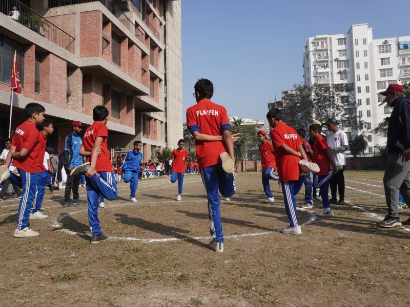
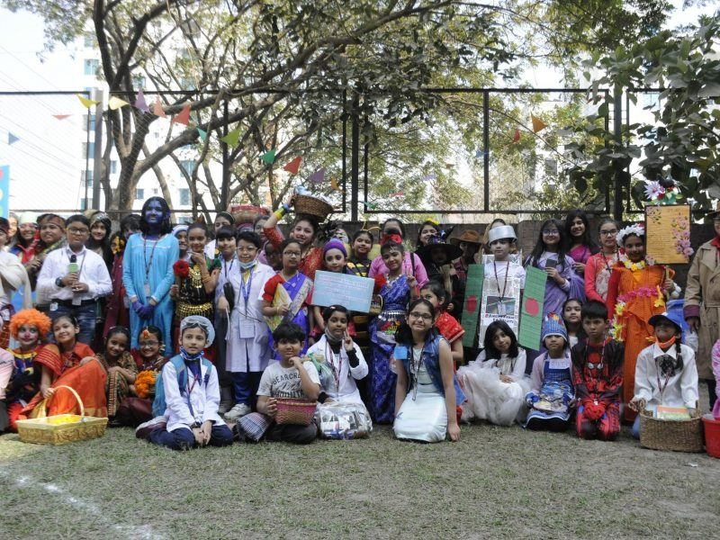
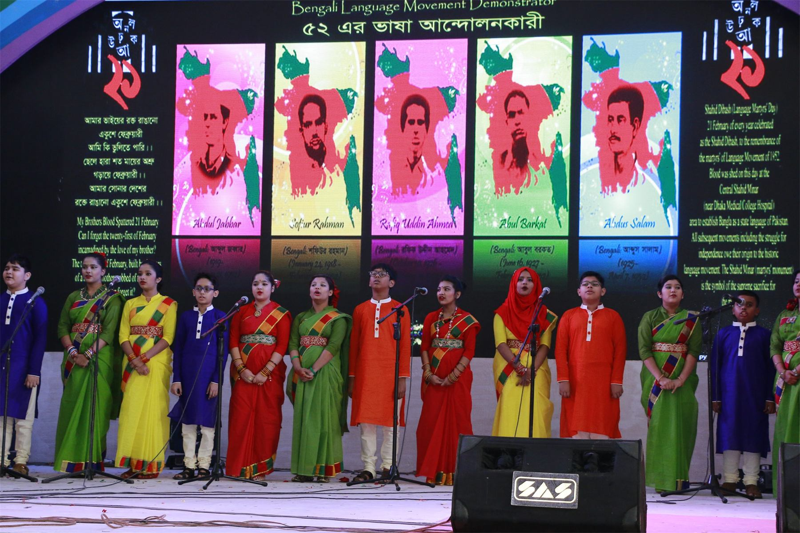

Learning happens beyond the classroom.
Believing that academic excellence alone does not guarantee a sound education, we aim to ensure the well-rounded development of our students.
Overview
Eleven programmes running alongside the timetable.
The academic curriculum covers what CAIE examines. Everything on this page covers what it does not — and Playpen treats the second list as seriously as the first.
Playpen is considered to be one of the leading innovators in the field of education in Bangladesh, and much of that reputation was built outside the exam syllabus: in the sports hall, on the stage, at the science fair, and in the communities our students go out to serve.
- Games and Sports
- Art & Craft
- Music — instrumental
- Music — vocal
- Dance
- Drama
- Debate
- Cookery
- Spelling Bee
- Olympiads
- Science clubs
- Language clubs
- Duke of Edinburgh’s Award
Sports & games
Seven disciplines, indoors and out.
Annual Sports is an integral part of our yearly non-academic programme. The campus is structured with both indoor and outdoor sports facilities, and the school maintains teams for boys and girls across all formats.
- Football
- Basketball
- Handball
- Athletics
- Table Tennis
- Chess
- Carom
The school organises both inter-school and inter-class tournaments through the year.





Arts, music & drama
Performing arts enhance creativity.
Performing arts enhance creativity and an appreciation for aesthetics and for our vibrant culture. Art and craft, instrumental and vocal music, dance and drama all run as regular programmes.
The year builds towards the Annual Cultural Programme, and takes in the national days that matter to Bangladesh along the way.
Art & Craft
Studio work connected to the O Level Art & Design syllabus.
Music
Both instrumental and vocal, performed at school events.
Dance
Group and solo work — Playpen’s group dance team took first position at the 13th Bangla Olympiad.
Drama
Staged in the campus multi-purpose hall.
Clubs & competitions
Where students test themselves against other schools.
Debate
Structured argument and public speaking, practised through the year and taken to inter-school competition.
Spelling Bee
Playpen students have earned medals and certificates at the International Spell Bee Competition.
Olympiads
Languages, science and mathematics — including the Bangla Olympiad, the Regional Physics Olympiad and the Space Exploration Olympiad.
Science & Language Clubs
Student-led clubs meeting through the year, feeding into fairs, competitions and the Science Fair.
Duke of Edinburgh’s Award
The international self-development programme, combining skill, service, physical activity and an expedition.
Cookery
A practical life-skills programme, run as part of the extra-curricular timetable.
Science & technology
The Science Fair.
We have always been very particular about holding, or taking part in, science fairs of all formats — inside the school and outside it.
Faculty stay actively engaged with the students who enter, at internal and external events alike, and the school has picked up a number of awards along the way. Students apply what they learn in class through projects, experiments, presentations and competition.
Classes are conducted through multimedia projectors, which lets teachers run lessons more effectively and gives students more to work with than a textbook alone.

Community service
Serving beyond the school gate.
This is very much an ongoing practice at Playpen. Every year our students are directly involved in serving their communities in one form or another.


The school year
Events and celebrations.
The calendar that shapes a year at Playpen — academic, cultural and national.
Annual Cultural Programme
The school’s largest performance event, staged in the multi-purpose hall.
Annual Milad
Held each year as part of the school’s calendar.
Science Fair
Student projects, experiments and presentations, judged internally and entered externally.
International Mother Language Day
Marked every 21 February.
Independence Day
The national day marked with a school function.
Pohela Boishakh
The Bengali new year, celebrated across the school.
Victory Day
Commemorated each 16 December.
Graduation Ceremony
For the outgoing senior cohort.
Sports Day
Annual Sports, with inter-house and inter-class competition.
Football & other tournaments
Inter-school fixtures through the sporting calendar.
Educational Tours
Study trips connected to the curriculum.
Class Parties
Year-group celebrations at key points in the calendar.

Workshops & seminars
Preparing for what comes after school.
Regular workshops and seminars run through the year, aimed mainly at senior students.
- Internet safety & responsible social media
- University applications — international institutions
- Model United Nations
- United World College programmes
- Duke of Edinburgh’s Award
Admissions
Come and see the school for yourself.
Speak to our Admissions Office, collect a form, or arrange a campus visit during office hours.